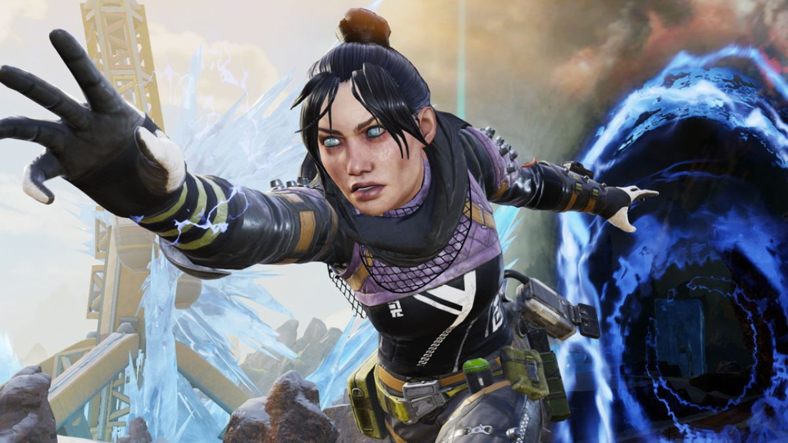
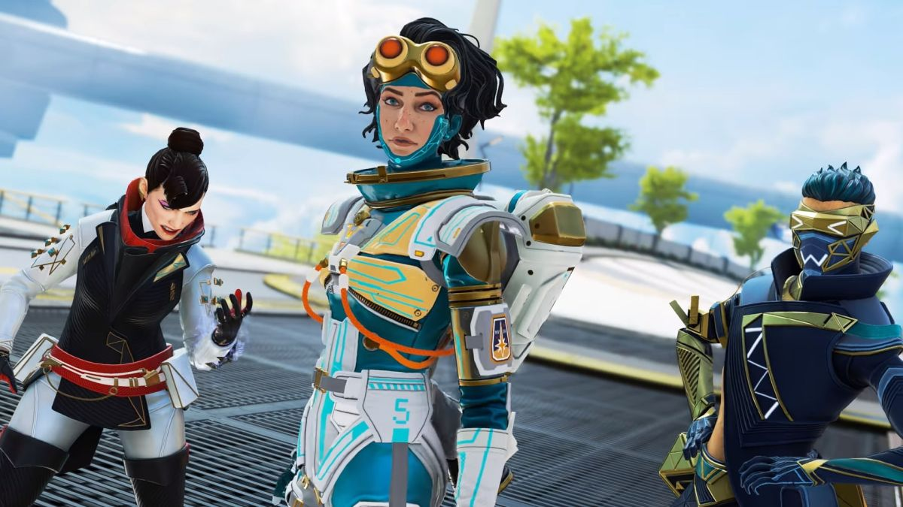

battle royale
Mapas enormes. Partidas para 60 jugadores. Un anillo que se cierra cada vez más.
¿Ganará tu pelotón?

Permanece dentro del anillo
El anillo no deja de cerrarse y no durarás mucho en campo abierto.
Cuanto más pequeño sea el anillo, más enfrentamientos tendrás con
el resto de pelotones. Así que asegúrate de tener el arsenal adecuado
para acabar con ellos.

El último pelotón en pie
Ya sea en dúos o tríos, el objetivo es el mismo: convertirse en el último
pelotón en pie. Pero la muerte no siempre es permanente: mantén a tu
pelotón en la lucha con la ayuda de las balizas de reaparición.